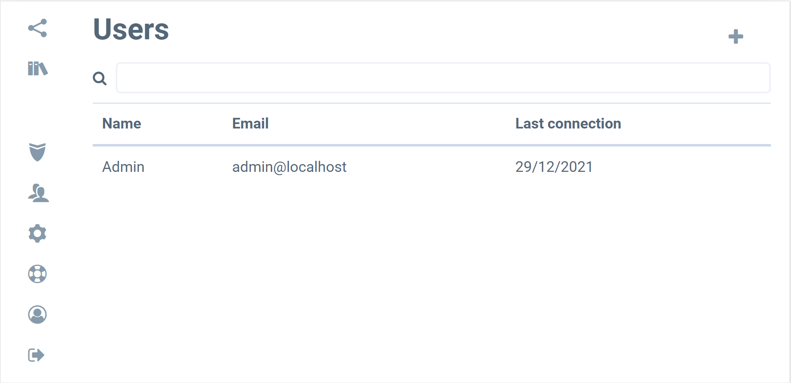
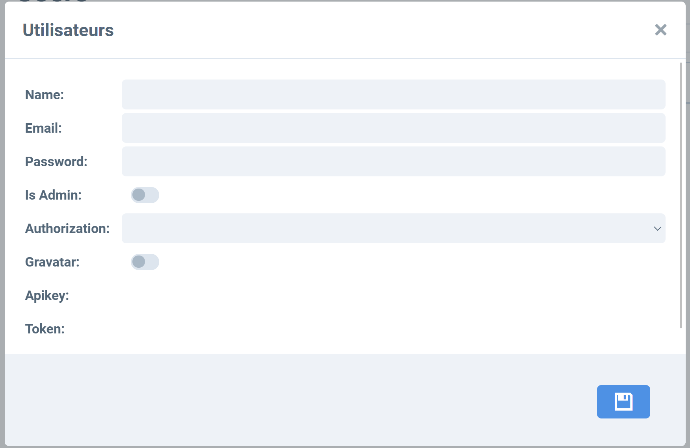
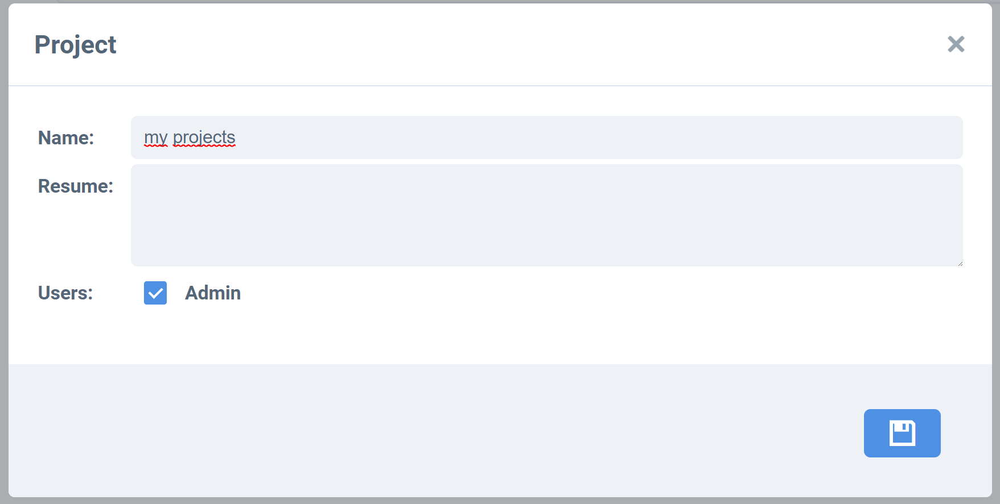
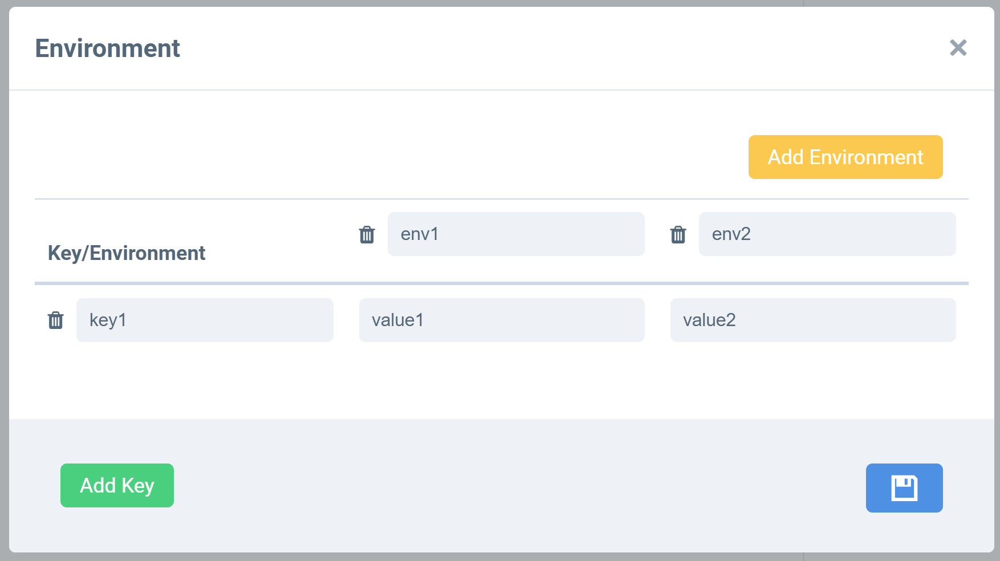
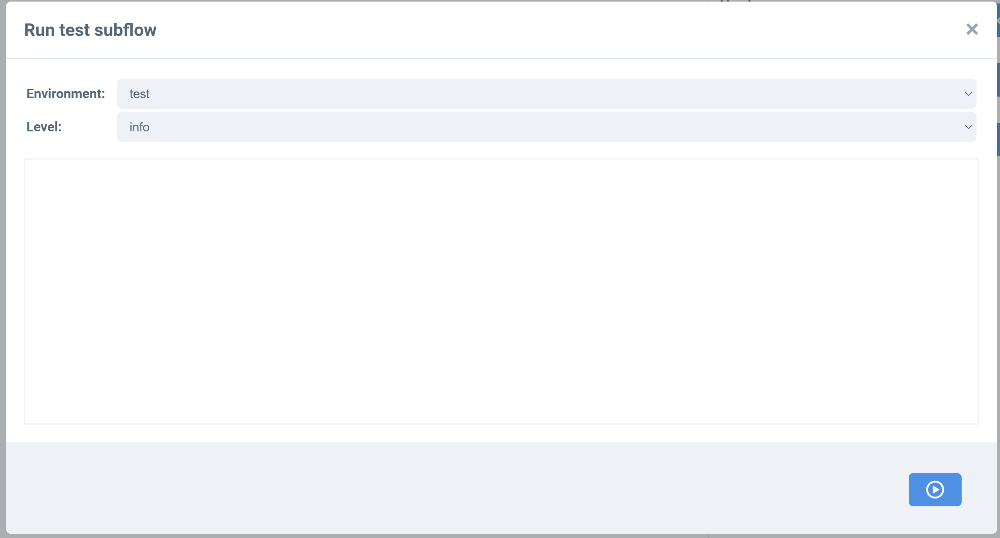

User
You can create users with a admin user

 for gravatar, bambou use https://www.gravatar.com/
 Project
ProjectBy default a user has a personnal project.

Flow
A flow can is downloaded and uploaded.A flow has
- name
- resume
- environment
- logs
 You can use key with
<< key1 >>
the key default of environment:
- _id: id of flow
- _name: name of flow
- _version
- _levellog: level log of run
 You can save flow with version notion.